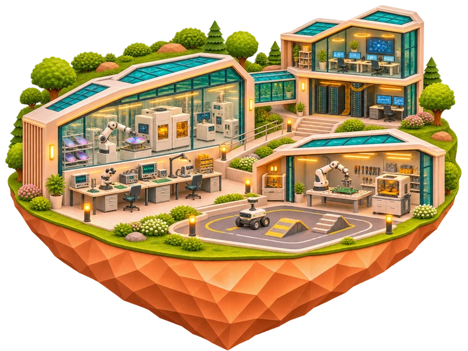
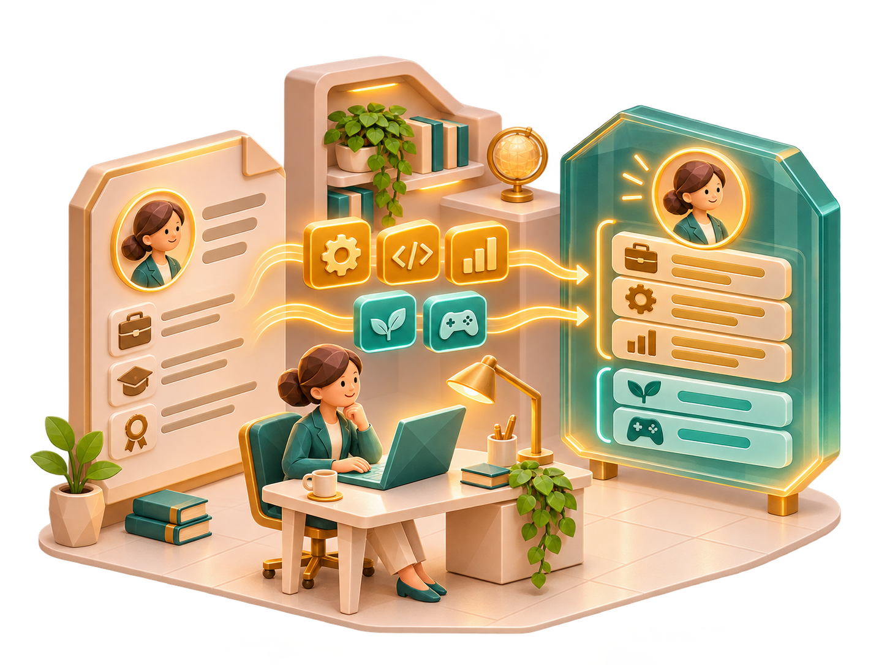
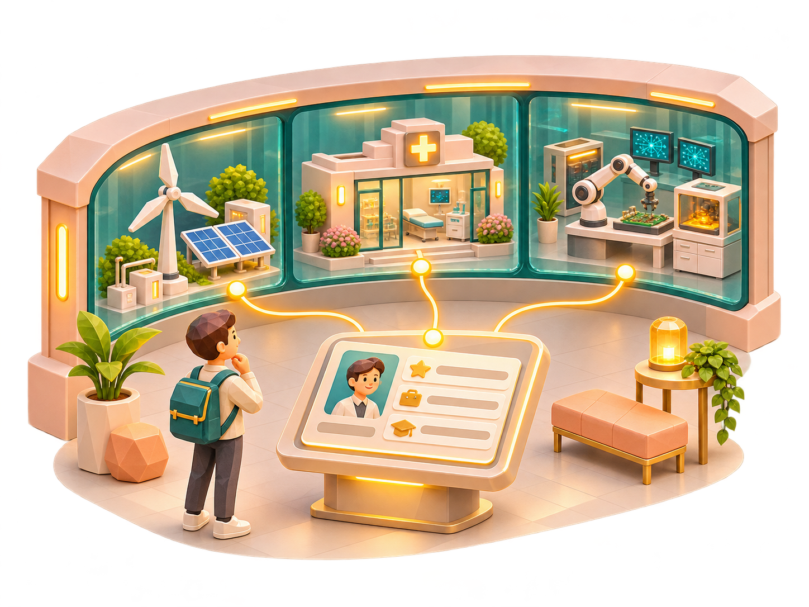
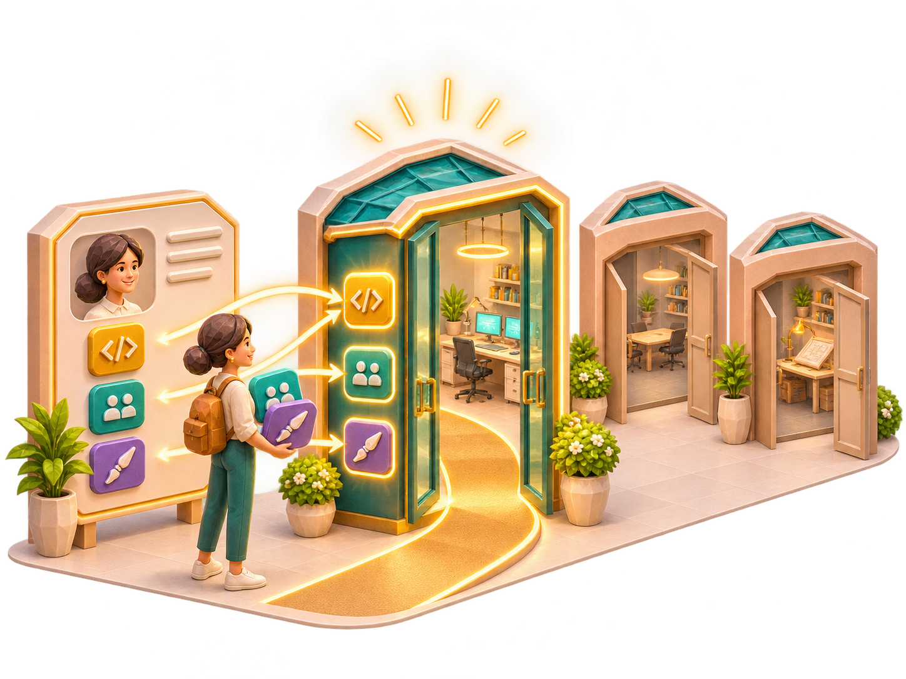
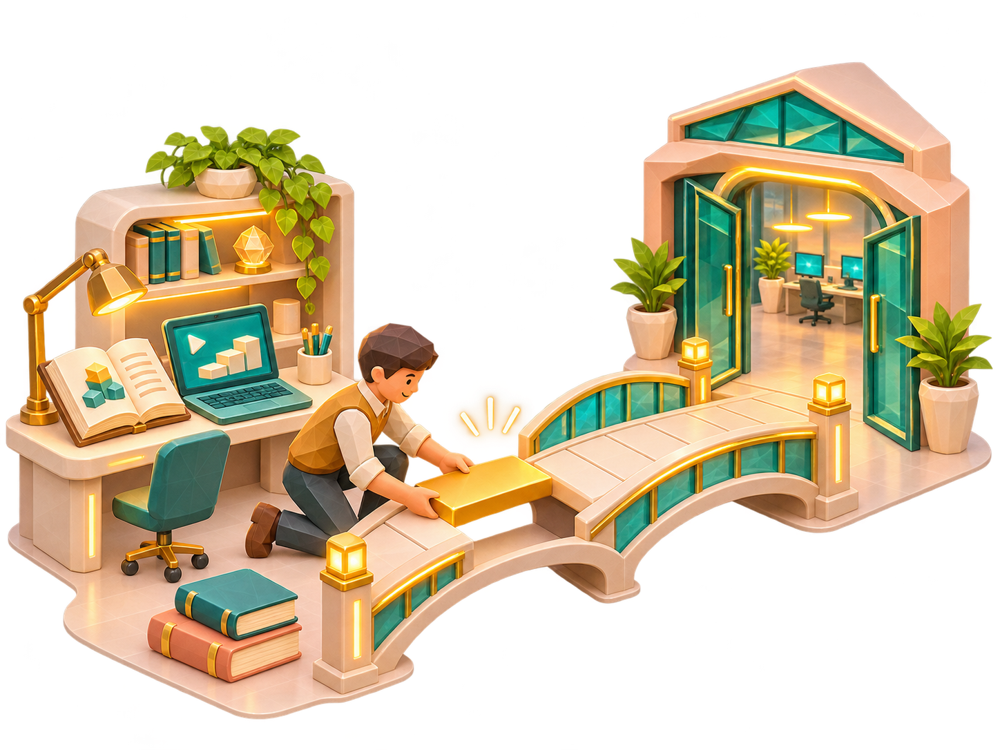
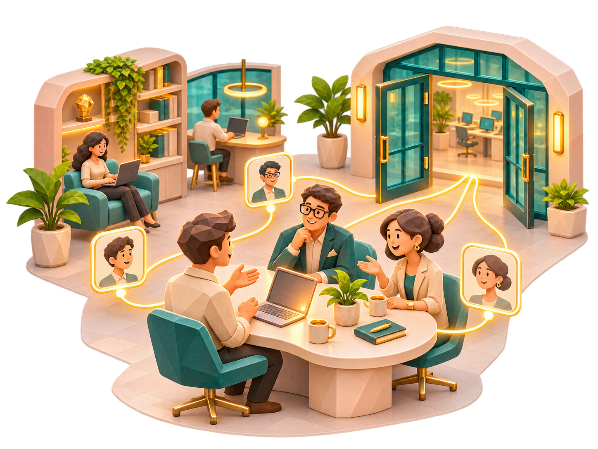
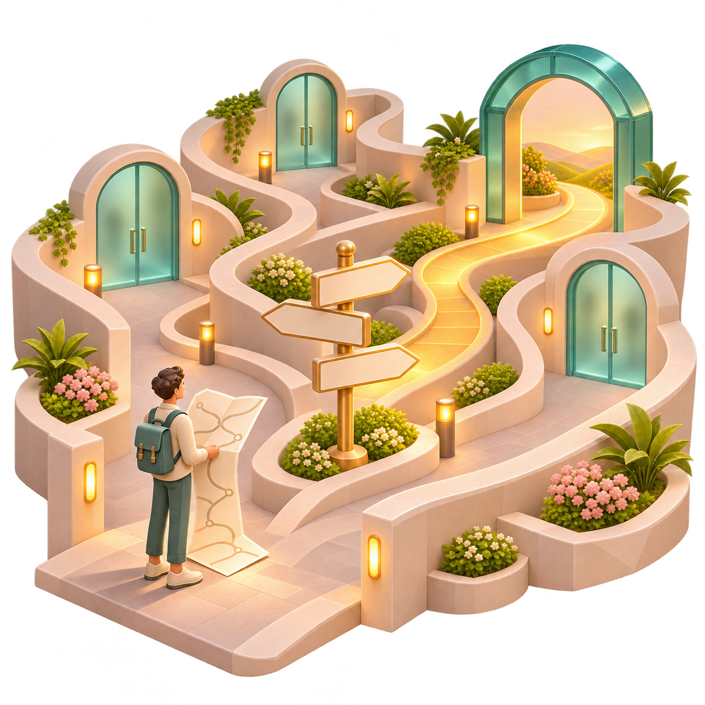

Expanded possibilities
We reveal industries, roles, and pathways you may never have considered — but where your skills are a powerful transferable match. Expand your horizon of what's possible.
An intelligent platform that helps you explore changing industries and roles, see where your skills transfer, follow pathways built on your experience, and activate your network to find opportunities far beyond the traditional job search.
Because careers aren't just job listings — they're worlds to explore.

Four connected tools that move you from overwhelmed to in-control — built around your experience, not generic advice.
We reveal industries, roles, and pathways you may never have considered — but where your skills are a powerful transferable match. Expand your horizon of what's possible.
Explore industries through labour-market insights, growth signals, regional demand, role pathways, and company ecosystems. Understand where work is moving — not just where it is today.
Your profile, pathways, saved industries, learning journey, and next steps live in one place — giving you a clear, evolving picture of where you're headed.
Your opportunities already exist around you. We organize your LinkedIn network by roles, companies, and industries so you can navigate the hidden job market intentionally — not by accident.
The old playbook — pick a title, climb in a straight line — doesn't match how work moves now. WonderPath is built for exploration: see the whole terrain, understand where you transfer, and choose your next move with intention.






Your experience. Your interests. Your starting point.
Upload your résumé and tell us what matters to you. We learn your experience, transferable skills, goals, energy, the industries that interest you, and what meaningful work actually looks like for you — so everything after this is personal.
Discover industries through interactive labour-market intelligence — and learn what each sector actually does, who's hiring, and where it's headed next.
We reveal role pathways built on your experience, transferable skills, career goals, and industry interests — including promising paths you may never have considered on your own.
See exactly what a role needs, the strengths you already bring, and what's missing — then get matched to courses and learning pathways that help you close the distance and move with confidence.
We organize your LinkedIn network into clear opportunities — people, industries, companies, and paths — so you can navigate the hidden job market intentionally and reach the right person at the right time.
Industries evolve. New roles emerge. Career paths branch in unexpected directions. People are navigating an entire landscape without a map — and traditional career guidance hasn't kept pace.

Industries, roles, and opportunities keep multiplying. Understanding the whole landscape can feel overwhelming before the search even begins.
AI, automation, and economic shifts create new pathways. People need a clearer view of where work is moving and how they can move with it.
Your transferable skills could open doors in sectors you've never considered. Searching only familiar roles leaves those possibilities unexplored.
Conversations, referrals, and communities open career paths. Knowing who to reach and how to start can make those opportunities easier to find.
People don't just lose opportunities.
They lose confidence.The modern career search became survival instead of exploration.
The world of work keeps changing. You deserve the space to explore it, the confidence to see where you belong, and guidance that helps you move forward.
We're building this so people can move through change with curiosity, confidence, and intention — with the belief that something better is within reach.
“A career isn't just a job. It's identity, meaning, possibility, and future.”
You deserve exploration, not panic.
You deserve visibility into possibilities you can't yet see.
You deserve guidance built for this new world of work.
Helping people understand the landscape, discover where they fit, and move forward intentionally — with curiosity instead of fear.
Find your next possibilityJoin early access, get a first look, and help shape a new way of exploring careers.
You're not behind. You may just need better visibility into what's possible.